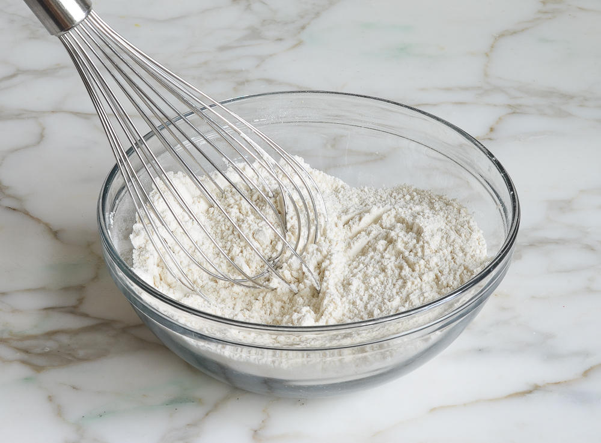

In a medium bowl, whisk together the flour, baking soda, baking powder and salt.
1 Hour
208
Easy
I love banana bread, it remind's me of the college days when my friend Dayna would bring me a moist, banana-y, and delicious slice. There are so many recipes to make banana bread and they are so easy to make. You can always add fresh or frozen berries, such as blueberries, raspberries, or strawberries or mixed berries; or add some walnuts, pecans or even chocolate chips. Whichever way you make it, it always turns out delicious.
Preheat the oven to 350°F.
Butter and flour 9x5-inch metal loaf pan.
In a medium bowl, whisk together the flour, baking soda, baking powder and salt.
In the bowl of an electric mixer, beat the butter and sugar until light and fluffy, about 2 minutes.
Add the eggs one at a time, beating well after each addition.
Add the mashed bananas, lemon juice and vanilla extract and mix well. It will look a little curdled at this point; that's okay.
Add the flour mixture and beat on low speed until just incorporated. Do not over mix.
Pour the batter into the prepared loaf pan and bake until a tester inserted into the center comes out clean, 40 to 45 minutes.
Let cool in the pan for about 10 minutes, then turn out onto a wire rack to cool completely.
The bread can be frozen for up to 3 months.
After it is completely cooled, wrap it securely in aluminum foil, freezer wrap or place in a freezer bag.
Thaw overnight in the refrigerator before serving.